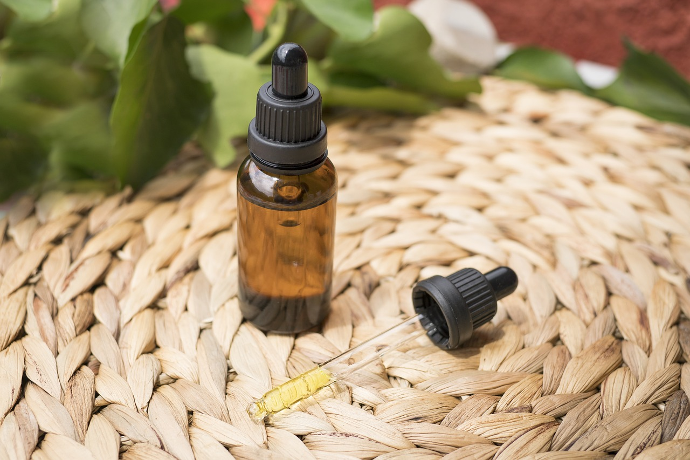
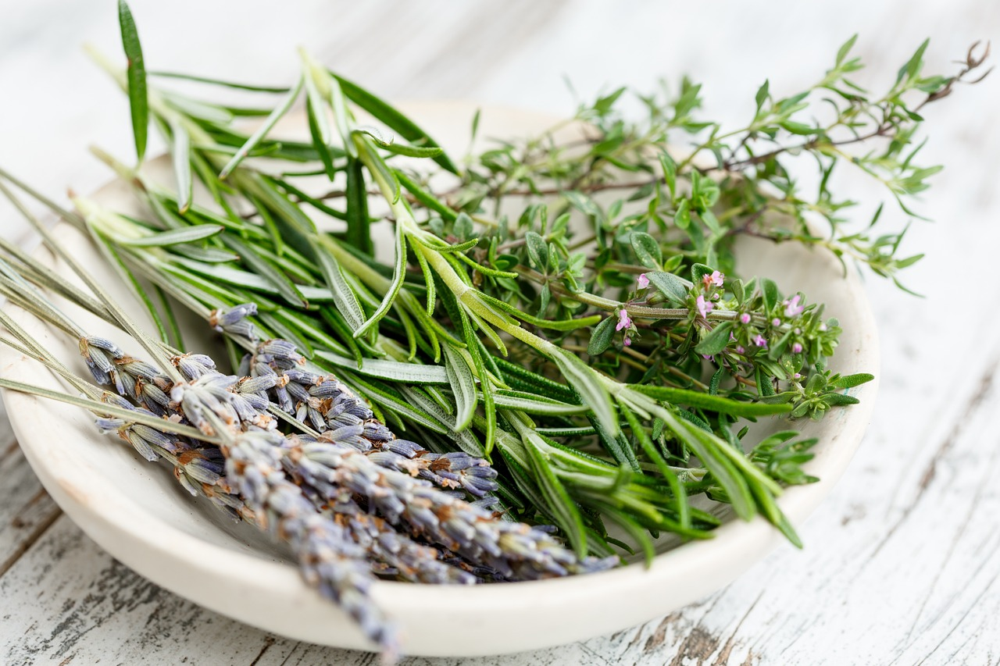

-
Tea

A natúr gyógyteák gyógynövényből készült, élvezeti vagy gyógyteaként iható, az általános közérzetet javító italok. A gyógyteákat, gyógynövényeket az emberiség már hosszú ideje használja különböző betegségek gyógyítására. A modern orvostudomány később bebizonyította ezeknek a természetes anyagoknak a jótékony hatásait. Ma már a legtöbb növénynek ismerjük a hatóanyagait, többet elő is tudunk állítani szintetikusan, azonban a növényekben található komplex hatóanyagrendszerek egymás hatásait potencírozzák, emiatt különösen ajánlható e teák fogyasztása. Ezeket a teákat hatóanyagtartalmuktól függően használhatjuk meghűléses megbetegedésekre, szív- és érrendszeri megbetegedésekre, húgyúti fertőtlenítőként, vizelethajtóként vagy a gyomor-bél rendszer megbetegedése esetén. Forrás: Wikipédia
-
Tinktúra
A tinktúrák igen tömény növényi kivonatok, amelyek hosszú időn át elállnak, mivel az alkohol kitűnő tartósítószer. A tinktúra alkoholtartalma nem lehet kevesebb 30%-nál. Különösen azokat a növényeket érdemes tinktúra formájában alkalmazni, amelyek rossz ízűek vagy hosszú időn át kelt szedni őket, illetve amelyek külsőleg, balzsamként is felhasználhatók.Az alkohol általában az összes fontos hatóanyagot kivonja a gyógynövényekből. Forrás: Wikipédia
-
Szárított gyógynövény
